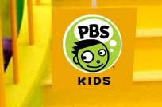
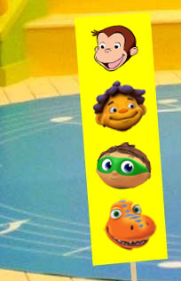
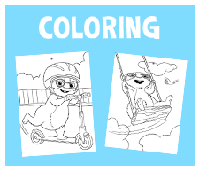

Get the full experience! For more PBS KIDS activities and videos,
download Flash
.



Find viewing tips, activities with Miss Rosa, books and more that will help your kids
learn the most from mornings on PBS KIDS. »
Find out when PBS KIDS programs are
on in your town. »
Who ever said you shouldn't play with food? Check out these fun games and activities with your kids
to learn about staying healthy
.